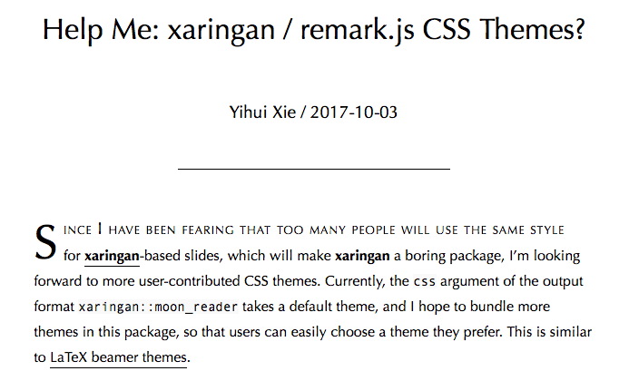

The longer story
I recommend Yihui’s xaringan package for slides. This is an R package, available through GitHub, for creating slideshows with remark.js through R Markdown. This means that you can:
- write all your slides in Markdown text
- include chunks of R code and rendered output like plots, results, tables, etc. in your slides
- use git for version control and share your GitHub repository
This makes xaringan ideal for an R-Ladies presentation!1
To use the package, you’ll need the devtools package installed so that you can use the install_github function. Then do:
devtools::install_github('yihui/xaringan')As Yihui points out in the documentation, if you use RStudio, you can use the menu to navigate to File -> New File -> R Markdown -> From Template -> Ninja Presentation, and you will see an R Markdown example.
I first used xaringan a few months ago. I was working with Yihui on the blogdown book, and had signed up to lead a workshop for the Portland R User group. Obviously, such a workshop could not have powerpoint slides, so it seemed like the perfect time to learn xaringan.
For my workshop, I made a simple website for the newly founded R-Ladies PDX using blogdown (Thanks to Augustina and Deeksha, our fearless organizers). So naturally, my slides needed more purple.
Luckily, the R-Ladies run a tight ship- they have a starter kit on GitHub that details all the pretty purples they like.

About a month after I did the R-Ladies blogdown workshop, I saw this blog post by Yihui:

First, I thought this was such a cool idea and I hope more people make and submit themes. Then I realized, I had already made a theme! I submitted a pull request2, Yihui helped me make some edits to the CSS files to make them more parsimonious with the default theme, I electronically signed a contributor agreement, and now the theme is there for you all to enjoy and use! You use the theme by editing the YAML:
output:
xaringan::moon_reader:
css: ["default", "rladies", "rladies-fonts"]If you use the theme and you are on twitter, I’d love to see it- please mention me on twitter!
Examples!
- My blogdown workshop slides: “Up and running with blogdown” (view the source .Rmd on GitHub)